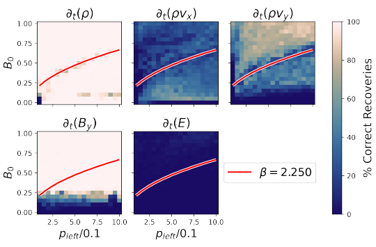
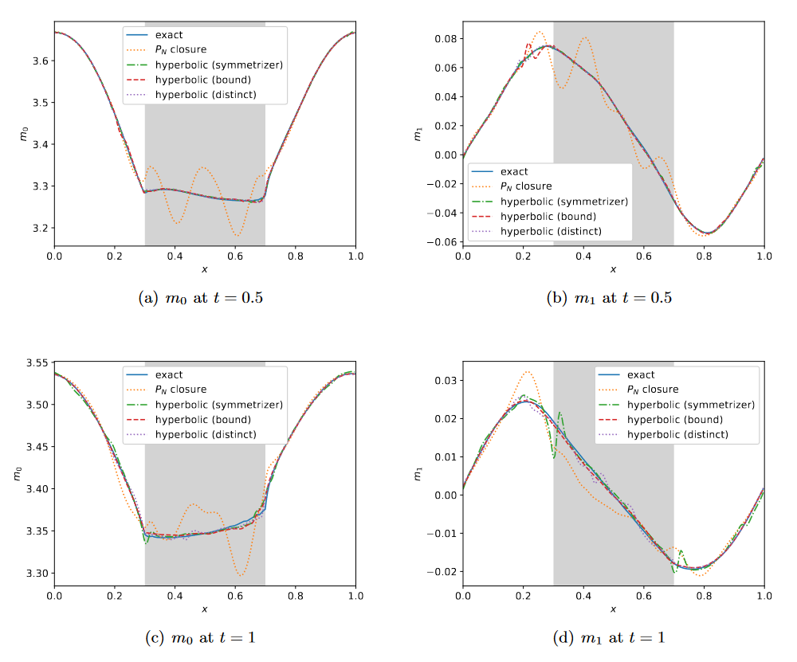
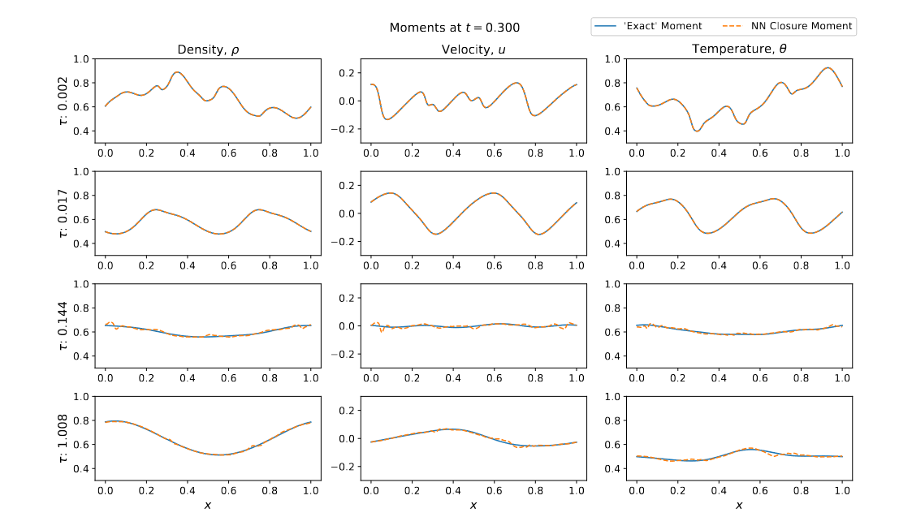

Reduced Order Modeling
Problems found in plasma science span multiple scales and high-fidelity models can be prohibitively costly from a computation stand-point. Reduced order modeling methods seek to reduce the computational cost while preserving quantities and properties of interest of the original model. One method is through surrogate models that effectively reduce the dimensionality of the original problem. Much of our recent work has been applying machine learning techniques to create reduced order models.
Weak Sparse Identification of Nonlinear Dynamics (WSINDy)
|  | ||
Data-driven methods of model identification are able to discern governing dynamics of a system from data. Such methods help us learn about systems with unpredictable evolution or systems with ambiguous governing dynamics given our current understanding. Many plasma problems of interest fall into these categories as there are a wide range of models that exist, however each model is only useful in a certain regime and often limited by computational complexity. To ensure data-driven methods align with theory, they must be consistent and predictable when acting on data whose governing dynamics are known. Weak Sparse Identification of Nonlinear Dynamics (WSINDy) is a recently developed data-driven method that has shown promise in learning governing dynamics from data with high noise levels.
Above, success of ideal MHD equation recoveries by WSINDy as a function of magnetic field and velocity variations on a Brio-Wu shock tube. Correlations to approximate plasma beta of the system can be observed in some cases.
Select Papers:
- G. Vasey, D. Messenger, D. Bortz, A. Christlieb, B. O'Shea, Influence of initial conditions on data-driven model identification and information entropy for ideal MHD problems, Journal of Computational Physics, 524 (2025), p. 113719, https://doi.org/10.1016/j.jcp.2025.113719
Structure Preserving Neural Networks
Closures in the Radiative Transfer Equation
|  | ||
We've taken a data-driven approach by applying machine learning (ML) to the moment closure problem for radiative transfer equation(RTE). Instead of learning the unclosed high order moment, we propose to directly learn the gradient of the high order moment using neural networks (NN), which is consistent with the exact closure we derive for the free streaming limit. This method performs much better than learning the moment itself and the conventional \(P_N\) closure.
Generally, the ML moment closure model is not able to guarantee hyperbolicity and long time stability. One method we employed was a symmetrizer (a symmetric positive definite matrix) for the closure system, and derive constraints such that the system is globally symmetrizable hyperbolic. With this symmetrizer, the new ML closure system inherits the dissipativeness of the RTE and preserves the correct diffusion limit as the Knunsden number goes to zero.
Another new method we developed to enforce the hyperbolicity of the ML closure model, exploiting that the coefficient matrix of the closure system is a lower Hessenberg matrix, we relate its eigenvalues to the roots of an associated polynomial. We design two new NN architectures based on this relation: the first NN is weakly hyperbolic and guarantees the physical characteristic speeds, the second NN is strictly hyperbolic and does not guarantee the boundedness of the eigenvalues.
Above, the two-material problem in RTE. Numerical solutions of \(m_0\) and \(m_1\) at \(t = 0.5\) and \(t = 1\) with \(N = 6\). The gray part in the middle is in the optically thin regime and the other part is in the intermediate regime.
Select Papers:
- J. Huang, Y. Cheng, A. J. Christlieb, and L. F. Roberts, Machine learning moment closure models for the radiative transfer equation I: Directly learning a gradient based closure, Journal of Computational Physics, 453 (2022), p. 110941, https://doi.org/10.1016/j.jcp.2022.110941
- J. Huang, Y. Cheng, A. J. Christlieb, L. F. Roberts, and W.-A. Yong, Machine learning moment closure models for the radiative transfer equation II: Enforcing global hyperbolicity in gradient-based closures, Multiscale Modeling & Simulation, 21 (2023),pp. 489–512, https://doi.org/10.1137/21M1423956
- J. Huang, Y. Cheng, A. J. Christlieb, and L. F. Roberts, Machine learning moment closure models for the radiative transfer equation III: Enforcing hyperbolicity and physical characteristic speeds, Journal of Scientific Computing, 94 (2022), https://doi.org/10.1007/735s10915-022-02056-7
Closures in the BGK/HME Equations
|  | ||
We have also applied the NN methods from the work on RTE to gas dynamics closure problems for the BGK equation. For training the network we used Hyperbolic Moment Equations (HME) as well as moments from solving the BGK equations using Discrete Velocity Methods (DVM).
Select Papers:
- A. J. Christlieb, M. Ding, J. Huang, and N. A. Krupansky, Hyperbolic Machine Learning Moment Closures for the BGK Equations, arXiv:2401.04783 [math.NA], https://doi.org/10.48550/arXiv.2401.04783 (Submitted to MMS SIAM)